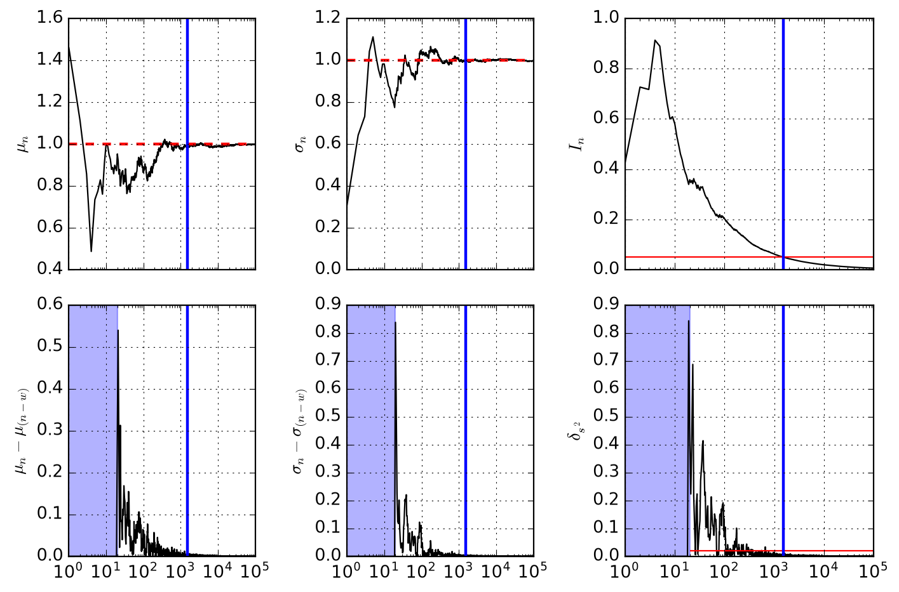

import matplotlib.pyplot as plt
import numpy as np
import scipy.stats as st
from typing import Generator, TupleHow Many More Points?
In this note we will empirically investigate the convergence of a data acquisition stream simulated by a simple white noise. The goal is to create an intuition regarding the stabilization of the the streamed data to know when to stop an experiment. Here we start by importing the standard tools we will use in this project.
The algorithm
An stable estimation of the mean \(\mu_n\) of a streaming sample of data points \(x_k\) can be done with help of Welford’s algorigthm. The updated mean \(\mu_n\) after \(n\) data points have been streamed (acquired) can be updated from the previous value \(\mu_{n-1}\) and the new data point \(x_n\) as:
\[ \begin{aligned} \Delta &= x_n - \mu_{n-1} \\[12pt] \mu_n &= \mu_{n-1} + \frac{\Delta}{n} \end{aligned} \]
The quantity \(\Delta\) has been introduced above as it will also be used to update the running sum of squares \(M_{2,n}\) as:
\[ M_{2,n} = M_{2,n-1} + \Delta \cdotp (x_n - \mu_n) \]
The sample standard deviation (using Bessel’s correction \(n-1\)) is computed as
\[ s_n = \sqrt{\frac{M_{2,n}}{n - 1}} \]
and the population standard deviation:
\[ \sigma_n = \sqrt{\frac{M_{2,n}}{n}} \]
Quantifying uncertainty
The uncertainty of the estimated mean is quantified by the SEM (standard error of the mean). It is given as
\[ \text{SEM}_n = \frac{s_n}{\sqrt{n}} \]
The associated confidence interval is computed using the critical value \(z(\beta)\) for the desired confidence level \(\beta\). If a value is found to be below this tolerance for the \(I_n\), then the estimate of the mean \(\mu_n\) is considered to be stable.
\[ I_n = z(\beta) \cdot \text{SEM}_n \le \epsilon_{\text{mean}} \]
Another useful metric is the stationarity of the variance (stability) over a moving horizon \(k\).
\[ \delta_{s^2} = \left|\frac{s_n^2 - s_{n-k}^2}{s_n^2}\right| \le \epsilon_{\text{var}} \]
The class StreamingCalculator provided in the appendix implements Welford’s algorithm and evaluates these metrics for convergence analysis.
Application
Let’s be straigh forward with the presentation. Below we defined a seeded RNG (random number generator) and sampled 100,000 data points from a normal distribution with mean 1 and standard deviation 1. It is important to seed the RNG so that we get reproducible results.
m_true = 1.0
s_true = 1.0
rng = np.random.default_rng(seed=43)
data = rng.normal(loc=m_true, scale=s_true, size=100_000)
m_eval = np.mean(data)
s_eval = np.std(data)Next, we use the StreamingCalculator to compute the streaming statistics and unpack the results. The window width is set to 20.
stream_stats = StreamingCalculator(window=20)
table = np.array(list(map(stream_stats, data)))
# mean, std, sem, dvar:
m, s, e, v = table.TNext we define the tolerance levels for the SEM (5% of actual standard deviation) and the change in variance \(\delta_{s^2}\) (2%). Assuming a double-tailed distribution, the typical confidence interval of \(\beta = 0.05\) is used for scaling the SEM. Using the criteria we compute the stopping index for the present series.
tol_sem = 0.05
tol_var = 0.02
confidence = 0.05
e_err = e * st.norm.ppf(1.0 - confidence / 2.0)
w = stream_stats.window
stability = (e_err[w:] < tol_sem) & (v[w:] < tol_var)
stop_at = np.argmax(stability) + w
m_stop = m[stop_at]
s_stop = s[stop_at]The following table summarizes the estimated and the full population values:
Stopping point at: 1521
| Population | Sample | |
|---|---|---|
| Mean | 0.99745 | 0.99843 |
| Std | 0.99671 | 0.99478 |
A summary of the results is illustrated below. Shaded regions cover the initial window where results are not available for those quantites. The vertical blue line indicates the acquisition stop iteration based on the above criteria.

Appendix
StreamingStatistics = Tuple[float, float, float, float]
class StreamingCalculator:
""" Welford generator for mean and sample standard deviation."""
def __init__(self, window: int, epsilon: float = 1.0e-12) -> None:
self.window: int = window
self._epsilon: float = epsilon
self._history: list[float] = []
self._generator = self._update()
next(self._generator)
def _feed_var_history(self, var: float) -> float:
""" Feed the running variance history. """
self._history.append(var)
if len(self._history) < self.window:
return 0
self._history.pop(0)
return abs((var - self._history[0])/ (var + self._epsilon))
def _update(self) -> Generator[StreamingStatistics, float, None]:
""" The underlying generator handling the recursive Welford logic. """
n, mean, M2 = 0, 0.0, 0.0
val = yield (mean, 0.0, 0.0, 0.0)
while val is not None:
n += 1
delta = val - mean
mean += delta / n
M2 += delta * (val - mean)
var = (M2 / (n - 1)) if n > 1 else 0.0
std = var ** 0.5
sem = std / n**0.5
var_change = self._feed_var_history(var)
val = yield (mean, std, sem, var_change)
def __call__(self, val: float) -> Tuple[float, float]:
""" Pass a new value by calling the as a function object."""
return self._generator.send(val)